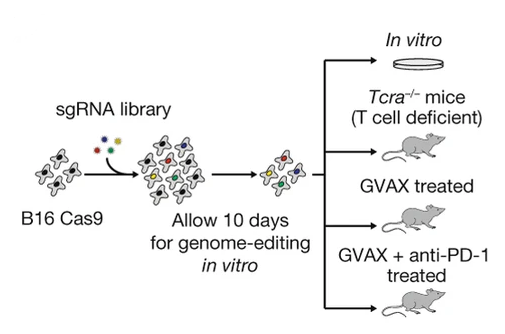

In Vivo CRISPR Screens - Analysis Walkthrough with Explanations
In Vivo CRISPR Screens - Analysis Walkthrough with Explanations
In recent years, in vivo CRISPR screens have become an excellent tool for the unbiased discovery of putative immunotherapy targets. The basic concept of such screens is that differing levels of immune pressure in mice xenograft models will selectively enrich or deplete specific genome edits which have been introduced through the transfection of a pool of CRISPR sgRNAs. This pool of guides constitutes a CRISPR screen library, a set of guides which will introduce the aforementioned edits into the cancer cell line to be engrafted. If the introduced edits are predicted to cause serious damage to the target genes, then the genes may be considered “knocked down” and the screen is called a CRISPRko screen. Alternative variations exist such as CRISPR “activation” (CRISPRa) screens, where transcription factors are pulled towards the promoter/transcription start site of the target genes, thus enhancing expression.

Many in vivo CRISPR screens have been completed in the literature - however I will focus on this one for this walkthrough. The CRISPR screens in this paper were conducted primarily by Rob Manguso, published in 2017 in Nature, and are notable for both their novelty at the time of their publication, and for their identification of ptpn2 as a key immunotherapy target. For this paper, the STARS scores (discussed below) for top hits are available, but as I am part of the Manguso lab, I also have access to the raw data.
From a bioinformatics perspective - the analysis of a CRISPR screen can be broken down into a number of steps:
- Data collection - attaining the raw sequencing data, often in bcl or fastq format.
- Poolq - generating a matrix of counts per barcode and sample.
- Preprocessing - evaluating inital statistics as quality control measures and calculating log-fold-changes (LFCs).
- Significance calculations - applying the hypergeometric test or STARS to LFC data.
These steps are reflective of what is currently standard practice in the Manguso lab at the Broad Institute as of March 2026, but these steps are flexible and there is a variety of tools available - a review of some approaches can be found here (the most notable tool being MAGeCK). That said, in this tutorial I will approach the analysis from the ground-up, relying on only basic Python libraries such as Pandas, in order to demonstrate a complete analysis pipeline.
Step 1: Data Collection
In this step, you will likely be collecting single-end Illumina demultiplexed fastqs. If not, the alternative is likely bcl files, which will need to be converted with bcl2fastq. I won’t cover this process since generally it’s already completed.
For the most part, sequencing results will be delivered to a cloud storage service like a Google cloud bucket. To access this data, you typically need to use a command line interface (CLI) tool like gstuil or the more modern gcloud-cli. If you are on mac, the easiest way to install such tools is through the homebrew package manager, where after installing it, you can install any package in it’s repositories, including gcloud-cli. Alternatively, you can install it manually. Once installed and authenticated, the process of grabbing the data is normally as easy as:
gcloud storage cp -r gs://path/to/data . For the ptpn2 paper, the raw data available to me is processed beyond this point from the outset.
Step 2: Poolq
In this step, you will be counting barcodes present in the fastqs. The tool PoolQ was purpose built for this, and counts the occurance of a set of barcodes in a pooled screen.
The inputs to PoolQ are mainly three things:
- A conditions file which maps the indexes used for demultiplexing to conditions.
- A reference (also known as a chip on some occasions) which maps DNA barcodes to features.
- Your demultiplexed fastq set.
For a CRISPRko sreen, the conditions file may map which wells on a 96 well plate are represented by which P7 index, and the reference may map sgRNA sequences to genes. Both of these files are typically headerless TSV files. In such a case, the poolq command run may look like this:
CONDITIONS="conditions.txt"
REFERENCE="reference.txt"
NAME="example"
java -jar ~/tools/poolq-3.12.0/poolq3.jar \
# Map fastqs to their index.
--row-reads "CGGTTCAA:A01_ME1_L001_R1_001.fastq.gz,GCTGGATT:A02_ME1_L001_R1_001.fastq.gz,<...>" \
--col-reference $CONDITIONS \
--row-reference $REFERENCE \
--barcode-scores barcode-scores-"$NAME" \
--scores scores-"$NAME" \
--quality quality-"$NAME" \
--correlation correlation-"$NAME" \
--normalized-counts lognormalized-counts-"$NAME" \
--unexpected-sequences unexpected-sequences-"$NAME".txt \
--row-barcode-policy PREFIX:AGAT \
--demultiplexedThe output of PoolQ will be a matrix of counts, named barcode-scores-example.txt in the above example. The col-reference paramater refers to how the columns of the output matrix will be reflected by the indexes mapped in the conditions.txt file. Likewise for the row-reference paramater. The row-barcode-policy paramater refers to the sequence which will be expected to precede every barcode, which is likely AGAT for cas9 screens and CACCG for cas12.
Besides the barode-scores file, the quality file can be used to filter low quality samples. In most cases, you should aim for > 80% match rate for reads to barcodes. Note that PoolQ adjusts this metric to account for reads that did not have an index sequence identified in them and to account for reads which may have matched a barcode but had too many errors in the sequence. If the match rate is close to 0% for a given sample or for all samples, then you should check that your conditions file is actually mapping the correct indexes, and that you used the correct reference, respectively. If you have some match (>10% but < 30%), then make sure there are enough reads in the problematic fastqs, the quality of the reads is not lacking (Q30 is > 90%), and the contamination profile is not concerning. Contamination can be easily assessed with a tool like CD-HIT-EST, which can cluster reads on similarity and nominate representative sequences that can then be BLASTn’d against NCBI databases and others like UniVec.
Once the PoolQ results are collected, we can begin the statistical analysis of the data. For the ptpn2 paper, this is the raw data I have attained.